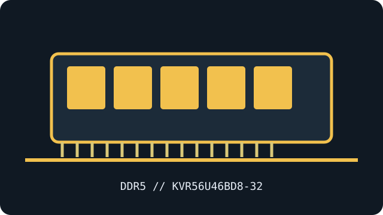

[ MANUFACTURER MODEL // MEMORY / RAM ]
Kingston ValueRAM KVR56U46BD8-32
A specific Kingston ValueRAM DDR5 desktop module identified by manufacturer part number KVR56U46BD8-32. Data below follows the exact maker datasheet; verify the specimen label and SPD revision when servicing hardware.

EXACT ID: Kingston ValueRAM KVR56U46BD8-32. Capacity is per module. Confirm the complete part number and module organization before installing.
Model specifications
| Manufacturer / exact part number | Kingston KVR56U46BD8-32 |
|---|---|
| Module / ECC class | Single 288-pin desktop DDR5 UDIMM; unbuffered, non-ECC |
| Capacity and data rate | 32 GB module (1 × 32 GB); DDR5-5600 (PC5-44800) |
| Rated timing | CL46-45-45 (JEDEC) |
| Operating voltage | 1.10 V (JEDEC typical; VDD and VDDQ) |
| Rank / organization | 2Rx8 |
| XMP / EXPO | JEDEC SPD profile; no XMP or EXPO profile listed |
| Compatibility | Single 288-pin DDR5 desktop UDIMM; this 32 GB dual-rank module requires a host that supports the module density/rank and 5600 MT/s. Verify CPU memory-controller limits, BIOS, motherboard QVL and slot population. |
Compatibility, service & archive notes
- Single 288-pin DDR5 desktop UDIMM; this 32 GB dual-rank module requires a host that supports the module density/rank and 5600 MT/s. Verify CPU memory-controller limits, BIOS, motherboard QVL and slot population.
- Check motherboard QVL and service manual, CPU memory-controller generation, BIOS version, supported DIMM density and slot population. The module is standard JEDEC DDR5 and may operate at a lower supported SPD rate on a slower host.
- This is a 288-pin DDR5 desktop UDIMM, not a SO-DIMM, RDIMM or LRDIMM. DDR generations and buffering classes are not interchangeable.
- This model is unbuffered non-ECC system memory. DDR5 on-die ECC is internal device correction, not system-level ECC reporting.
- Power down and follow the host service procedure, use ESD controls, handle the DIMM by its edges, and never force it into a keyed slot. Retain a label photo and read-only SPD dump with host, BIOS, slot and test results.
Manufacturer & standards references
- Kingston exact KVR56U46BD8-32 datasheetManufacturer source for exact capacity, data rate, JEDEC timing, voltage and rank.
- Kingston part compatibility lookup for KVR56U46BD8-32Second manufacturer source for module identification and platform compatibility checking.
- JEDEC JESD79-5 — DDR5 SDRAMDDR5 interface and generation context; it does not establish a particular system’s qualification.
Use the exact module label and SPD with the platform maker’s QVL for final validation; module revisions and system limits matter.